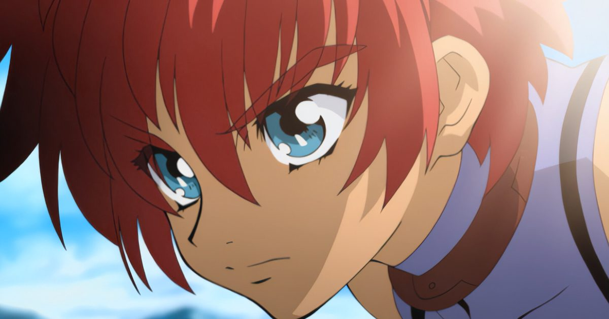

2026-10-18 · 经典复刻深读
《Tales of Eternia Remastered》（永恒传说 复刻版）10 月 15 日登陆 PS5 / PS4 / Xbox Series X|S / Switch / Switch 2，10 月 16 日上 Steam，29.99 美元，全平台支持官方中文。由京都的老牌外包劲旅 TOSE 操刀，底子是 2005 年的 PSP 版，原作是 2000 年 PS1 上的《永恒传说》。Metacritic 落在 73–76 区间，OpenCritic 76–77（69% 推荐），Steam 好评率 87.3%，PS5 玩家评分 4.78/5。中文社区的评价却被劈成两半——一边是 RPG Site 说的"纠正了一桩历史不公"，另一边是"原汁原味端上来还卖得死贵"。我们想说清楚的是：这次真正的增量根本不在画面上，而在一个被英文版删掉了二十五年的东西。

中文社区把"重制"和"复刻"混着用，先把事实分开：本作是高清复刻，不是完全重制。底子是 2005 年 PSP 版，原作是 2000 年 PS1 的《永恒传说》。所以你拿到手的内容量，和二十一年前那张 UMD 是一致的——这次加的是保护壳，不是新菜。
改了什么，值得一条条列清楚，因为它决定了这 29.99 美元到底买到了什么：
也砍了一样东西，而且玩家意见很大：PSP 版支持本地通信对战，复刻版把这个功能去掉了。
如果你没玩过《传说》系列，需要先理解 skits 是什么：它是队员之间的短对话片段，可看可不看，内容是吐槽、拌嘴、補世界觀、补人物关系。这个系列的角色魅力大半长在 skits 里，不在主线里。而当年的英文版，把大量非必要 skit 直接删掉了。
RPG Site 的作者为此专门回去启动了他那台"永远修不好的"PSP 做对照，结论很直白：没有 skits 的《永恒传说》，像是少了灵魂的一部分。所以这次 250 段 skits 全语音回归，加上全新的英文配音与重新润色的文本，不是"加料"，是把一桩持续二十五年的删减纠正过来。Fami 通与 IGN 中国的试玩报道也都把焦点放在这上面。
我认为这才是这次复刻唯一无可替代的价值——画面好坏你可以在模拟器上自己滤，本地化缺失你补不了。有一个细节很说明问题：新英文配音阵容在游戏内没有署名（只署了录音室 Cup of Tea），这是《传说》系列长期没解决的老毛病。连这次都没修好，说明万代南梦宫对"英文配音演员"这件事的历史态度还没真正转弯。
这次我最欣赏的是画面 / 音效双开关，而且随时可切、不用重启。
为什么这件事重要？因为像素游戏重制的最大争议从来不是"做不做"，而是"滤镜好不好看"。Grandia HD Remaster 那个没人喜欢的模糊滤镜至今还在被骂，《Chrono Cross: Radical Dreamers Edition》则直接栽在性能上。这两家的共同错误是：替玩家做了决定，且不提供退路。
TOSE 的做法是把决定权交回去。RPG Site 说得很对——考虑到有些像素重制连一个呈现选项都不给，这个开关"老实说应该更常见才对"。
但它有两个破绽，值得点名。第一，角色精灵本身是没动的，改的是背景和物品精灵——于是宝箱、道具袋、存档点在重制背景里显得格外突兀，因为它和没变的人物精灵不是一个颗粒度。第二，动画过场无论你选哪种模式，都强制套了平滑滤镜和 16:9（和《Lunar Remastered Collection》同款做法），原素材分辨率太低，放大后在大屏上确实不好看。COGconnected 甚至明确表示自己更喜欢原始呈现。
所以准确的说法是：它把怀旧做成了开关，但开关没接到底。这个设计方向是对的，执行留了尾巴。
中文社区那句"没加热的冷饭"之所以能顶到热评第一，核心不是游戏素质，是价格锚点错位。29.99 美元（Steam 上另有 24.99 美元的 Deluxe Upgrade Pack，含成长道具、历代战斗 BGM 包、美术集、原声）处在"完整重制"的心理价位区间，而交付的内容是"高清复刻 + QoL + 本地化补全"。
这两件事其实都对，矛盾出在不同人群买的东西不一样：
| 你是谁 | 你实际买到的 | 29.99 是否值 |
|---|---|---|
| 中文新玩家 | 首次官方中文 + 全套 QoL + 完整 skits | 值——以前只能靠民间汉化 |
| 玩过英文版的老玩家 | 250 段从未听过的 skits + 新配音新文本 | 值——你买的是被补完的那部分 |
| 玩过日文版的老玩家 | 只有 QoL 和画面开关，内容无新增 | 不值——这是你的"冷饭" |
| 想玩 PS1 原味的人 | 底子是 PSP 版，不是 PS1 版 | 需确认——你要的可能不在这里 |
一摆就清楚：骂"冷饭"的和夸"纠正历史不公"的，说的可能是两个不同的商品。这也是为什么 Steam 好评 87% 而 MC 只有 76——玩家在为自己得到的增量打分，媒体在为它作为一款 2026 年 RPG 的完整度打分。
很多人被名字绕晕，这里一次说清。《永恒传说》2000 年在日本 PS1 发售，北美版改名叫 《Tales of Destiny II》——而日本另有一款真正的《Tales of Destiny 2》，从未官方英文化。于是《传说》系列在英文世界留下了两条互不兼容的命名线。这次复刻统一回《Tales of Eternia Remastered》，算是把这笔糊涂账也一并结了。
对中文玩家来说更简单一点：这次是系列罕见的官方中文支持，PSP 年代这个版本在中文圈只流传着各种民间汉化。这本身就改变了中文玩家的成本结构——你第一次可以用官方文本打完这部作品。
注意这个分打的是"复刻完成度"，不是游戏本身——原作作为 2000 年的 2D A-LMBS（主动型线性动作战斗系统）代表作，战斗手感和 Craymel Cage System（晶灵笼系统）带来的魔法丰富度与连段取消，COGconnected 说它"像 2D 格斗游戏一样"，这个评价我完全同意，那是它至今仍能站住的根。扣分项是明确的：PSP 本地联机被砍、动画过场强制平滑、物品精灵与角色精灵颗粒度不统一、以及 Switch 版那处不该出现的控制问题。
把这部作品放进万代南梦宫的节奏里看会更清楚：系列正统新作越来越稀，复刻成了维持 IP 在场感的方式。COGconnected 那句"这是系列 2D 作品中第一部被搬上现代主机的"点出了它的位置——它是一个补位，不是一次回归。
从商业上这完全说得通：TOSE 是做过《Tales of Graces F Remastered》的班底，京都老厂，几十年外包史，交期和品质都稳。把老作一部部搬到现代平台，成本可控、风险极低、还能顺手修掉历史遗留的本地化残缺。这是低成本的 IP 资产维护，不是创作。理解这一点，就不会对"为什么不做新作"生气——这两件事的预算根本不在一个池子里。
所有人都在聊画面开关和 skits，但我认为真正改变体验的是那套目的地图标：黄色主线、星星道具、沙漏限时事件、蓝色 arte 事件。
原因是，《传说》老作最劝退新玩家的地方从来不是战斗，是"我不知道现在该去哪"。RPG Site 说得很准——老《传说》的支线事件"容易错过，有时还有点绕"。这类设计在 2000 年是让玩家去问同学、去买攻略本的社交机制，在 2026 年就是纯粹的摩擦。把它做成可开关的图标，等于把一部 26 年前的作品从"需要攻略本"迁移到"可以自己玩"。这项改动的实际价值高于画面重制。
《永恒传说 复刻版》最准确的定位，不是"把老游戏搬上来卖一次"，而是把一个在英文世界和中文世界都残缺了二十多年的版本补完。250 段 skits 全语音回归、全新的英文文本与配音、系列首次官方中文、以及那套把"该去哪"这个老问题一次性解决掉的目的地图标——这四件事加起来，才是这 29.99 美元真正买到的东西。
它的短板也同样诚实：底子是 2005 年的 PSP 版而非完全重制，动画过场被强制平滑，PSP 本地联机被砍，Switch 版还有一处不该有的摇杆吸附问题。所以如果你已经是玩过日文版的老玩家，这盘"冷饭"的抱怨是成立的；但对中文玩家和当年只接触过英文版的人来说，你吃到的其实是第一次。
40 小时，60 帧，两个世界悬在天空两端。这次你终于能用官方中文，听完他们路上说的每一句废话——而那些废话，恰恰是这个系列之所以是这个系列的原因。